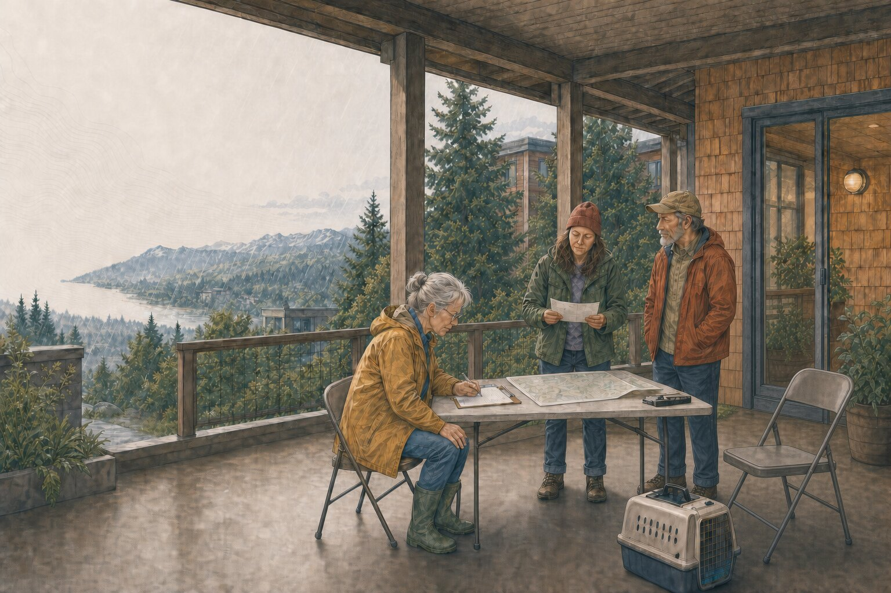

What can happen here?
Read the land, weather, routes, infrastructure, and public authorities that shape a local interruption.

Prepare for consequences, not for causes
Living here comes with a few things worth knowing. Learn what your place can do, look after the ordinary parts of life, and make a few useful arrangements with the people nearby. Start where you are; one useful move counts.
Choose what you need
You don't need to read the whole site before you do something useful. Choose the part that matches your day.
Read the land, weather, routes, infrastructure, and public authorities that shape a local interruption.
Find the immediate protective action. If local officials are giving instructions for your area, follow them.
Work through water, sanitation, temperature, air, food, medication, communication, movement, and animals.
Document what happened, keep the right records, and reduce the next complication.
Make a small arrangement before an interruption and organize needs, offers, tasks, and handoffs afterward.
Find the alert, emergency, road, weather, utility, health, or hazard source that serves your area. Cascadia.me doesn't issue alerts.
The practical center
An earthquake, winter storm, wildfire, flood, landslide, heat wave, or equipment problem may begin differently and still affect many of the same things at home.
Store what you can lift and reach. Know what your household needs, what an advisory means, and where resupply information will come from.
Build water capacityHeat, cold, smoke, carbon monoxide, and a power outage change the safe choices inside a home.
See the continuity guideWrite down medication names, doses, and prescribers. “The small white one” is a poor description.
Map household needsA bridge, ferry, elevator, pass, fuel supply, or phone network can change who can get where—and how long it takes.
Read the connected systemsAlerts, evacuations, roads, utilities, health, weather, and hazard science come from different public authorities.
Find official sourcesTime, money, mobility, language, housing, care work, animals, and transportation aren't footnotes. They're the plan.
Start with one personPeople nearby
One check-in, one meeting place, and one shared question can turn several separate households into people who can help each other think.

Hazard references
Use these guides for the warnings, protective actions, maps, routes, and consequences specific to each hazard.
Sources and limits
Use Cascadia.me to understand what could change and make a few useful arrangements. Alerts, evacuation orders, health guidance, road closures, and utility instructions come from the authorities serving your area.
If something is happening where you live, start with the Tribal, First Nation, municipal, county, regional, provincial, state, federal, transportation, utility, public-health, weather, or hazard authority responsible for your area. Follow its current instructions over anything summarized here.
Cascadia.me is independently written in Washington State. It carries no advertising or affiliate links. Safety claims are checked against the linked official and scientific sources, with review dates shown where the advice can change.
Homepage reviewed July 25, 2026.